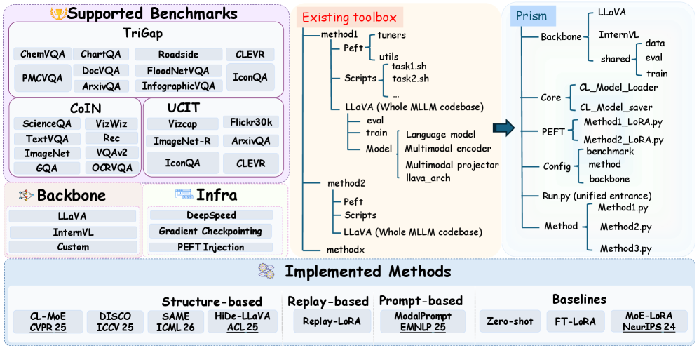

Prism introduces a plugin-driven infrastructure that decouples algorithm development from MLLM backbones, enabling scalable, reproducible, and fair MCIT research.
本文提出了Prism，一个插件驱动的可复现基础设施，用于可扩展的多模态持续指令调优（MCIT）。它通过轻量级插件注册机制将算法开发与骨干网络实现解耦，支持9种方法、3个基准测试以及DeepSpeed等原生大规模训练框架。Prism消除了结构碎片化，实现了MCIT方法间的公平比较，其中最佳方法SAME在UCIT基准上达到了73.07%的平均准确率。
Deep Note — prism
Key Takeaways - Prism is a plug-in reproducible codebase for scalable multimodal continual instruction tuning (MCIT). - It decouples algorithm development from backbone implementation via a lightweight plugin registration mechanism. - Prism supports 9 methods, 3 benchmarks, and native large-scale training infrastructure like DeepSpeed. - The best method, SAME, achieves 73.07% average accuracy on the UCIT benchmark. - Prism eliminates structural fragmentation and enables fair comparison across MCIT methods.
0) Metadata
- Title: Prism: A Plug-in Reproducible Infrastructure for Scalable Multimodal Continual Instruction Tuning
- Alias: prism
- Authors: Jun-Tao Tang, Yu-Cheng Shi, Zhen-Hao Xie, Da-Wei Zhou
- arXiv ID: 2605.26110
- Published:
- Links:
- Abs: https://arxiv.org/abs/2605.26110
- HTML: https://arxiv.org/html/2605.26110v1
- PDF: https://arxiv.org/pdf/2605.26110
- Tags: multimodal-continual-learning, instruction-tuning, plugin-architecture, reproducibility, mllm
- Domains: system_safety
- Rating: 3/5 (base 1 + quality 1 + observation 1)
1) Why-read
Prism introduces a plugin-driven infrastructure that decouples algorithm development from MLLM backbones, enabling scalable, reproducible, and fair MCIT research.
2) CRGP
C — Context
Multimodal Large Language Models (MLLMs) achieve versatility via instruction tuning, but real-world deployment requires continuous adaptation to emerging tasks, motivating Multimodal Continual Instruction Tuning (MCIT). Existing MCIT toolkits like CoIN and MCITlib suffer from engineering bottlenecks, lacking unified backbones and large-scale training support.
R — Related work
- CoIN (Chen et al., 2024): early MCIT toolkit with 4 algorithms and 1 benchmark.
- MCITlib (Guo et al., 2025c): expands to 8 algorithms and 3 datasets but lacks unified backbone and large-scale support.
- HiDe-LLaVA (Guo et al., 2025a): structure-based method for parameter isolation.
- DISCO (Guo et al., 2025b): another structure-based approach.
- SAME (Xie et al., 2026): achieves state-of-the-art on UCIT benchmark.
- ModalPrompt (Zeng et al., 2025): prompt-based continual learning method.
G — Gap
Current MCIT research is hindered by severe engineering bottlenecks: existing methods directly modify base MLLM codebases, leading to method-specific architectures that limit code reuse and fair comparison. Toolkits lack unified backbone design and native support for large-scale training pipelines like DeepSpeed, restricting scalability and reproducibility.
P — Proposal
Prism is a plugin-driven reproducible infrastructure that separates algorithmic development from backbone implementation via a lightweight plugin registration mechanism. New methods and benchmarks are integrated as independent plugins without modifying the underlying MLLM codebase, enabling scalable and reproducible MCIT experimentation with native support for distributed optimization.
---
4) Experiments
Main results
On the UCIT benchmark, SAME achieves the highest average accuracy of 73.07%, followed by DISCO at 69.54% and ModalPrompt at 67.93%. FT-LoRA (catastrophic forgetting baseline) achieves only 37.90%, while Zero-shot is 32.34%.
Ablation
The plugin registration mechanism reduces code integration overhead: new methods are added via a single integration.py file and registered with @CLMethodFactory.register(), eliminating the need to modify the backbone codebase.
Limitations
['Prism currently supports only 3 benchmarks and 9 methods, which may not cover all MCIT scenarios.', 'The framework relies on widely adopted open-source libraries, which may limit flexibility for custom backends.', 'Performance numbers are reported only on UCIT; generalization to other benchmarks is not fully demonstrated.']
5) Why it matters
- Provides a standardized, reproducible infrastructure for MCIT research, enabling fair comparisons across methods.
- Plugin-based design reduces engineering overhead, accelerating method development and adoption.
- Supports large-scale training with DeepSpeed, making it practical for real-world MLLM deployment.
- Addresses a critical gap in the MCIT ecosystem by unifying backbones and benchmarks.
6) Next steps
- [ ] Evaluate Prism on additional benchmarks like CoIN and TriGap to validate generalizability.
- [ ] Extend the plugin system to support more backbone architectures beyond LLaVA.
- [ ] Integrate additional continual learning methods, especially replay-based and regularization-based approaches.
- [ ] Explore automated hyperparameter tuning and experiment tracking within the Prism framework.
7) Scoring
3/5 = base 1 + quality 1 + observation 1
Prism：面向可扩展多模态持续指令调优的插件式可复现基础设施
主要结论 - Prism是一个插件式可复现代码库，用于可扩展的多模态持续指令调优（MCIT）。 - 它通过轻量级插件注册机制将算法开发与骨干网络实现解耦。 - Prism支持9种方法、3个基准测试以及DeepSpeed等原生大规模训练基础设施。 - 最佳方法SAME在UCIT基准上达到了73.07%的平均准确率。 - Prism消除了结构碎片化，实现了MCIT方法间的公平比较。
1) 阅读理由
Prism引入了一种插件驱动的基础设施，将算法开发与MLLM骨干网络解耦，实现了可扩展、可复现且公平的MCIT研究。
2) CRGP（背景 / 相关工作 / 差距 / 方案）
上下文：多模态大语言模型（MLLM）通过指令调优实现了多功能性，但实际部署需要持续适应新出现的任务，从而催生了多模态持续指令调优（MCIT）。现有的MCIT工具包如CoIN和MCITlib存在工程瓶颈，缺乏统一的骨干网络和大规模训练支持。相关工作：CoIN（Chen等人，2024）是早期的MCIT工具包，包含4种算法和1个基准；MCITlib（Guo等人，2025c）扩展到8种算法和3个数据集，但缺乏统一的骨干网络和大规模支持；HiDe-LLaVA（Guo等人，2025a）是基于结构的方法用于参数隔离；DISCO（Guo等人，2025b）是另一种基于结构的方法；SAME（Xie等人，2026）在UCIT基准上达到了最先进水平；ModalPrompt（Zeng等人，2025）是基于提示的持续学习方法。差距：当前的MCIT研究受到严重工程瓶颈的阻碍：现有方法直接修改基础MLLM代码库，导致方法特定的架构限制了代码复用和公平比较。工具包缺乏统一的骨干网络设计和对DeepSpeed等大规模训练管道的原生支持，限制了可扩展性和可复现性。提案：Prism是一个插件驱动的可复现基础设施，通过轻量级插件注册机制将算法开发与骨干网络实现分离。新方法和基准作为独立插件集成，无需修改底层MLLM代码库，从而支持可扩展和可复现的MCIT实验，并原生支持分布式优化。
3) 实验
在UCIT基准上，SAME达到了最高的平均准确率73.07%，其次是DISCO的69.54%和ModalPrompt的67.93%。FT-LoRA（灾难性遗忘基线）仅达到37.90%，而零样本为32.34%。
消融实验
插件注册机制降低了代码集成开销：新方法通过单个integration.py文件添加，并使用@CLMethodFactory.register()注册，无需修改骨干代码库。
局限性
['Prism目前仅支持3个基准和9种方法，可能无法覆盖所有MCIT场景。', '该框架依赖于广泛采用的开源库，可能限制自定义后端的灵活性。', '性能数据仅在UCIT上报告，对其他基准的泛化能力尚未充分展示。']
4) 重要性
- 为MCIT研究提供了标准化、可复现的基础设施，实现了方法间的公平比较。
- 基于插件的设计减少了工程开销，加速了方法开发和采用。
- 支持DeepSpeed的大规模训练，使其适用于实际MLLM部署。
- 通过统一骨干网络和基准，填补了MCIT生态系统中的关键空白。
5) 下一步
- [ ] 在CoIN和TriGap等其他基准上评估Prism，以验证其泛化能力。
- [ ] 扩展插件系统以支持除LLaVA之外的更多骨干架构。
- [ ] 集成更多持续学习方法，特别是基于回放和正则化的方法。
- [ ] 在Prism框架内探索自动超参数调优和实验跟踪。
